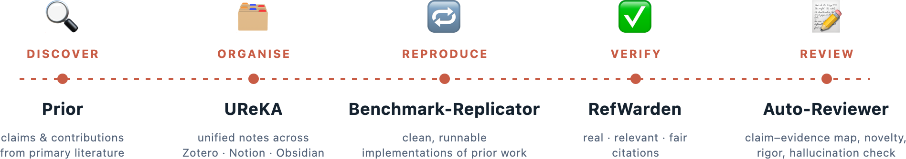
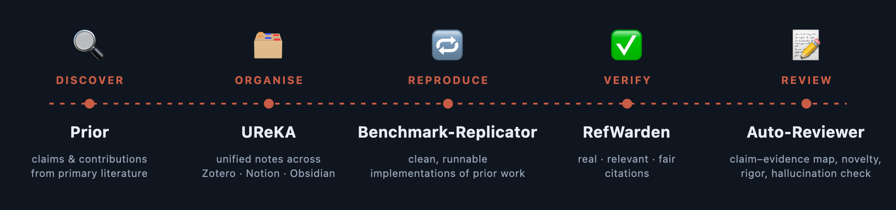

Oxford–Singapore Hackathon
A two-week hackathon building AI agents for academia.


Two weeks, three universities, one question: how much of the scientific grind can we hand to AI agents? Researchers from Oxford, NUS, and NTU team up to prototype open-source agents for the parts of research that eat your week: trawling literature, hunting grants, translating across disciplines, coordinating projects, and judging whether research agents are actually any good.
Everything ships in the open under permissive licences at github.com/agents4academia. By demo day we want working tools, practical lessons on building research agents, and at least one agent that an academic refuses to stop using.
- Dates
- 14 – 26 June 2026
- Venue
-
Department of Statistics, University of Oxford
National University of Singapore (NUS)
Nanyang Technological University (NTU) - Format
- Invitation-only
- Organizers
-
Klara Kaleb, Harit Vishwakarma, Yee Whye Teh (Oxford)
Wei Liu (NUS)
Mingye Zhu, Yunqiao Yang (NTU) - Advisors
-
Tom Rainforth (Oxford)
Wee Sun Lee (NUS)
Luke Ong (NTU) - Participants
- Researchers from Oxford, NUS, and NTU